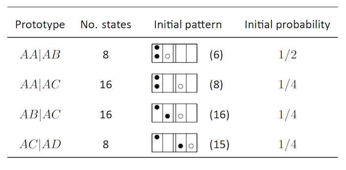

Broman KW (2012) Genotype probabilities at intermediate generations in the construction of recombinant inbred lines. Genetics 190:403-412



Table S13. — Starting states for the calculation of probabilities of two-locus autosomal diplotypes of the form AA|AB, in the generation of four-way RIL by sibling mating.